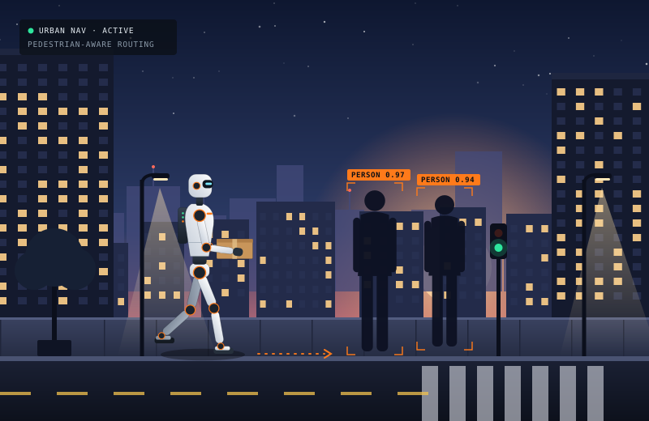
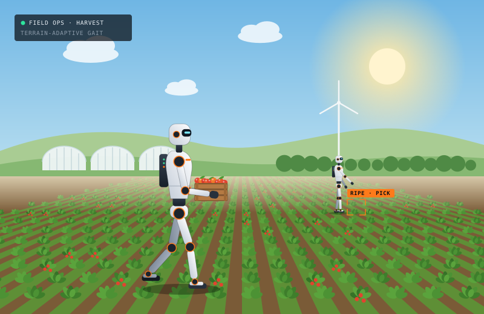

Hands-on development
Every project is designed, built and tested by our members — mechanics, electronics and software, end to end.
Robotics hobby & development association
TiRobotix is a community of engineers, makers and students designing complete humanoid systems, industrial applications and the components that make robots move — joints, motors and safety systems.

About TiRobotix
TiRobotix brings together engineers, students and robotics enthusiasts who want to go beyond kits and build real machines. As an association, our members share knowledge, tools and time to design, prototype and test robots — from the first sketch to the first steps.
Our focus is the humanoid form: robots that can work in spaces designed for people. That is why we develop and test our platforms in two very different settings — busy urban environments and demanding agricultural environments.
Every project is designed, built and tested by our members — mechanics, electronics and software, end to end.
We bring professional practice to hobby robotics: documented designs, peer reviews, test plans and continuous iteration.
Robots that work near people need safety at every level — from the motor driver and joint up to the robot's behavior.
Application environments
The same humanoid platform faces very different challenges depending on where it works. We develop and test for both.

Urban environments
Sidewalks, curbs, crossings and crowds. We work on perception, navigation and balance for humanoids that share public space with pedestrians — for tasks such as last-meter delivery, assistance and inspection.

Agricultural environments
Soft soil, slopes, mud and fragile crops. We develop humanoids that walk between crop rows, inspect plants and harvest by hand — combining human-like dexterity with the endurance of a machine.
What we build
Our work spans three areas — each one feeding into the others.
Complete bipedal robots designed and integrated in-house: structure, actuation, sensing, power, compute and the control software that makes them walk, balance and work.
We adapt our platforms and components to practical tasks in workshops, warehouses and production environments that were built around people.
The building blocks behind every robot we make — designed, prototyped and tested by our members, and reusable across projects.
Components
A humanoid is only as capable as the parts it moves with. These three component families are at the core of our engineering work.
Compact joint modules that combine motor, gearing, encoder and driver in a single unit — built for the torque density, precision and backdrivability that walking and manipulation demand.
Safety is designed in, not bolted on. Our architecture covers emergency-stop chains, speed and torque limiting, fall detection and safe-state behavior, so robots can operate close to people.
Brushless and frameless torque motors paired with field-oriented control drivers, tuned for high torque at low speed with smooth, quiet and efficient operation.
Projects
The concrete projects behind our work, from individual components to complete subsystems. Each one moves from planned to in progress to done as the work advances.
A compact joint module for a humanoid knee: BLDC motor, cycloidal reducer and absolute encoder in a single housing, designed for high torque density and backdrivability.
A motor driver with field-oriented control, phase-current sensing, CAN-bus communication and thermal protection, sized for our joint actuators.
A dedicated safety board with a dual-channel emergency-stop chain, speed and torque monitoring, and a defined safe state for every joint.
A hip, knee and ankle test rig to validate actuators, balance control and gait patterns before scaling up to a full humanoid.
A physics simulation of a humanoid walking on soft, uneven soil between crop rows: the starting point for our agricultural work.
A tendon-driven, multi-finger hand with tactile fingertip sensors, able to pick a ripe tomato or turn a door handle with the same grip control.
A camera and on-board AI model that find ripe fruit among the leaves, estimate its position and plan a gentle grasp for harvesting.
Model-predictive whole-body control for push recovery and stable walking on slopes, soft soil and curbs.
A perception and planning stack that detects pedestrians, curbs and crossings and plans safe, predictable paths along city sidewalks.
How we work
Every robot and component goes through the same disciplined cycle — and then goes through it again.
Requirements, CAD and simulation. Each subsystem starts as a documented design reviewed by fellow members.
3D printing, machining, electronics assembly and wiring — fast iterations on real hardware.
Bench tests, hardware-in-the-loop and controlled trials, always with safety systems armed.
Supervised trials in real urban and agricultural settings — then back to the drawing board with what we learned.
Get involved
Whether you are a student, an experienced engineer or a curious maker, there is a place for you at TiRobotix.
Hobbyists and makers who want to learn, build and contribute to real humanoid robotics projects.
Become a memberHands-on experience for theses, research projects and portfolios in robotics, mechatronics and AI.
Start a projectCollaborate with us on industrial applications, component development or sponsorship of our projects.
Partner with usContact
Questions about membership, our projects, industrial collaborations or components? Write to us — we would love to hear from you.
Email info@tirobotix.com